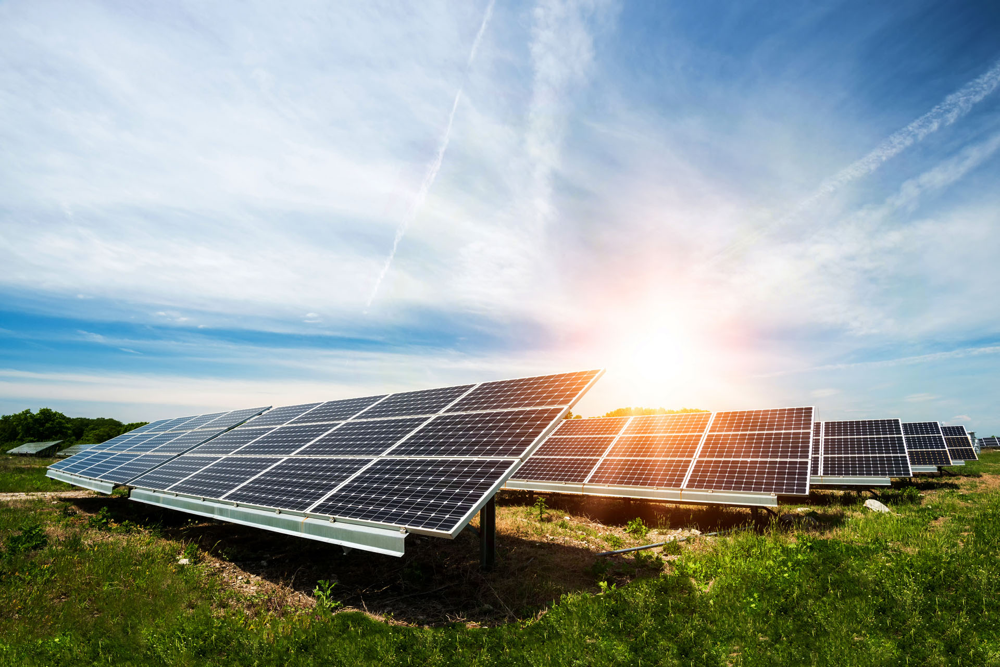

Solar energy is the technology used to harness the sun's energy and make it useable. As of 2011, the technology produced less than one tenth of one percent of global energy demand.
Many are familiar with so-called photovoltaic cells, or solar panels, found on things like spacecraft, rooftops, and handheld calculators. The cells are made of semiconductor materials like those found in computer chips. When sunlight hits the cells, it knocks electrons loose from their atoms. As the electrons flow through the cell, they generate electricity.
On a much larger scale, solar-thermal power plants employ various techniques to concentrate the sun's energy as a heat source. The heat is then used to boil water to drive a steam turbine that generates electricity in much the same fashion as coal and nuclear power plants, supplying electricity for thousands of people.
 How to Harness Solar Power
How to Harness Solar Power
In one technique, long troughs of U-shaped mirrors focus sunlight on a pipe of oil that runs through the middle. The hot oil then boils water for electricity generation. Another technique uses moveable mirrors to focus the sun's rays on a collector tower, where a receiver sits. Molten salt flowing through the receiver is heated to run a generator.
Other solar technologies are passive. For example, big windows placed on the sunny side of a building allow sunlight to heat-absorbent materials on the floor and walls. These surfaces then release the heat at night to keep the building warm. Similarly, absorbent plates on a roof can heat liquid in tubes that supply a house with hot water.
Solar energy is lauded as an inexhaustible fuel source that is pollution- and often noise-free. The technology is also versatile. For example, solar cells generate energy for far-out places like satellites in Earth orbit and cabins deep in the Rocky Mountains as easily as they can power downtown buildings and futuristic cars.

Pitfalls
Solar energy doesn't work at night without a storage device such as a battery, and cloudy weather can make the technology unreliable during the day. Solar technologies are also very expensive and require a lot of land area to collect the sun's energy at rates useful to lots of people.
Despite the drawbacks, solar energy use has surged at about 20 percent a year over the past 15 years, thanks to rapidly falling prices and gains in efficiency. Japan, Germany, and the United States are major markets for solar cells. With tax incentives, and efficient coordination with energy companies, solar electricity can often pay for itself in five to ten years.